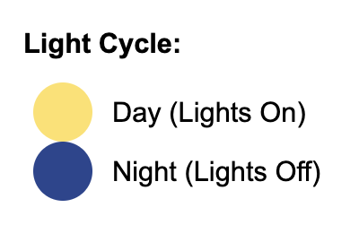

Mice are more active at night (lights off)
The baseline temperature for is 99.5°F, which is similar to humans.
This can vary based on activity and estrus.
The data was aggregated by averaging the temperature readings for each hour across all mice for each gender.
The data was then transformed to convert Celsius to Fahrenheit.
Female body temperature surpasses male temperature by over 2°F during estrus, a spike not seen on regular days.
Regardless of the time of day or estrus cycle, the female average body temperature is always above the male average body temperature.
Female and male mice are hotter when the lights are off (night), likely due to increased activity.
Our visualization was motivated by the goal of understanding body temperature patterns in female mice as a proxy to gain insight into human female anatomy and physiology. Specifically, we wanted to determine whether female mice exhibit higher body temperatures, on average, than male mice. Another reason we chose this dataset was as a result of the guest lecture from class. It sparked an interest in us especially since female health is not researched significantly. To make this comparison intuitive and effective, we made several key design decisions.
We used position encoding through a line plot to allow for clear visual comparisons between temperature trends over time. Additionally, we incorporated redundant area encoding using a thermometer chart to provide readable, concrete temperature values. This visual metaphor, a thermometer, was chosen for its familiarity. To enhance interpretability for our audience, we transformed temperature values from Celsius to Fahrenheit, and averaged the data hourly across 13 mice per sex. This aggregation made the visualization easier to interpret by reducing noise that occurred when plotting minute-level data. We included a light gray dotted horizontal line to display the baseline temperature for mice, which can help interpretability of the temperature variations.
Another conscious decision we made was to plot both lines representing male and female mice on the same chart for easier comparison. Having two separate charts would have made this a little harder to differentiate between the mice. We also included context, aggregation details, and our conclusions on the right side of the chart to provide the reader with more information.
For the color palette, we chose hot pink to represent female mice and blue to represent male mice, aligning with socially familiar color associations. We also used dark blue and yellow to denote lights-off and lights-on periods, respectively, and included a legend to ensure clarity. These colors were selected to convey meaning while making the visualization accessible and context-rich for readers.
Regarding the development process, our whole team began by discussing what aspects of the data were most interesting to explore. Three of us (Esther, Mythri, Preethi) worked on making static visualizations to understand more about the data and the kinds of filtering, transformation, and aggregation that we would like to implement. Our other team member (Sathvika) conceptualized the interactive visualization and the key components of it, including the hand drawn mice. We utilized pair-programming strategies when implementing our ideas in D3.JS. We took turns being the "coder," while the other three helped refine our interactivity and design and talk through the code. When finalizing our design we looked to the resources available to us by course staff and referenced the rubric. All four of us contributed to the writeup.
In total, we spent approximately 10 hours as a group developing the application. The most time-consuming aspects were data wrangling and iteratively refining the visual encodings to strike a balance between clarity and detail. It also took a while to really understand the context of the data as well, and how we accurately represent this data in a clear, concise manner.Throughout the process, we emphasized collaboration and open feedback to ensure each part of the project aligned with our central research question.